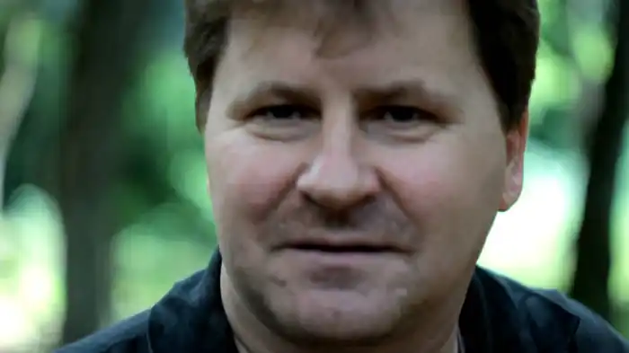
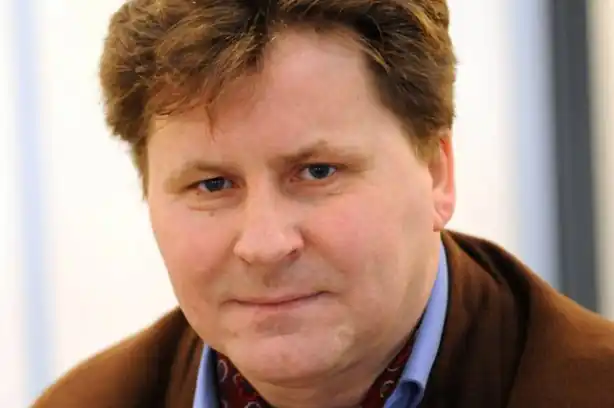

Ігор Павлюк — відомий український письменник та науковець, член Асоціації європейських письменників. Ігор Зиновійович Павлюк побачив світ на Волині 1 січня 1967 року. Через десять днів після його народження померла мама Ігоря — Павлюк Надія Олексіївна (дівоче прізвище — Вовкотруб). Виховували хлопця дід і баба, прадід і прабаба по материнській родовій лінії — примусові переселенці з Холмщини у с. Ужова Рожищенського району. Родина по батькові жила у с. Малий Окорськ Локачинського району. Ігор закінчив із золотою медаллю Доросинівську середню школу і вступив до Санкт-Петербурзького військового училища, яке скандально залишив на другому курсі, коли почав писати вірші, за що був покараний засланням у Забайкальську тайгу. Там йому прийшлося будувати автомобільну дорогу разом із в'язнями. Після повернення на Батьківщину, у 1986 – 1987 роках, Ігор Павлюк працював кореспондентом Ківерцівської районної газети на Волині. У 1992 році він з відзнакою закінчив факультет журналістики Львівського державного університету імені Івана Франка, після чого працював у релігійній пресі та робив передачі на радіо. З 1987 року письменник мешкав у Львові, а з 2003-го року — у Києві. Ігор Зиновійович любить подорожувати Україною та світом. У 1999 та 2000 роках він був у творчому відрядженні у США — науковцем, "ченцем", поетом-пілігримом. Він був також учасником міжнародних літературних фестивалів, зустрічей — у Грузії, Росії, Білорусії, Польщі, Туреччині, Ірландії...
Нині Ігор Зиновійович Павлюк — доктор наук із соціальних комунікацій — працює старшим науковим працівником відділу української літератури XX століття Інституту літератури ім. Тараса Шевченка НАН України у місті Києві. Він також — професор кафедри української преси Львівського національного університету імені Івана Франка, член редколегій літературно-мистецьких та наукових часописів, збірників: "Терен", "Золота пектораль", "Дзвін", "Українська літературна газета", "Вісник Львівського університету".
Ігор Зиновійович Павлюк — Лауреат Народної Шевченківської премії ("Залізний Мамай"), літературних премій імені Василя Симоненка, імені Бориса Нечерди, міжнародної літературної премії імені Миколи Гоголя "Тріумф", імені Маркіяна Шашкевича, імені Григорія Сковороди. Ігор Павлюк — автор багатьох книг. Він також перекладає з російської мови. Окремі його вірші стали піснями. За композиціями віршів Ігоря Павлюка створено театральні постановки. Його п’єсу "Вертеп" ставить Львівський драматичний театр імені Лесі Українки. Твори Ігоря Павлюка перекладені російською, білоруською, польською, англійською, латиською, болгарською, японською мовами. Ігор Павлюк представлений у книзі "European writer Introduction". Книга "Політ над Чорним морем" Ігоря Павлюка посіла перше місце за підсумками відкритого голосування і була визнана книгою року у Великобританії ("A Flight Over the Black Sea", переклав Стівен Комарницький). Вірші Ігоря Павлюка, зібрані в книзі, запрошують читача відправитися на прогулянку українським поліссям, описуючи зустрічні явища за допомогою витончених метафор.